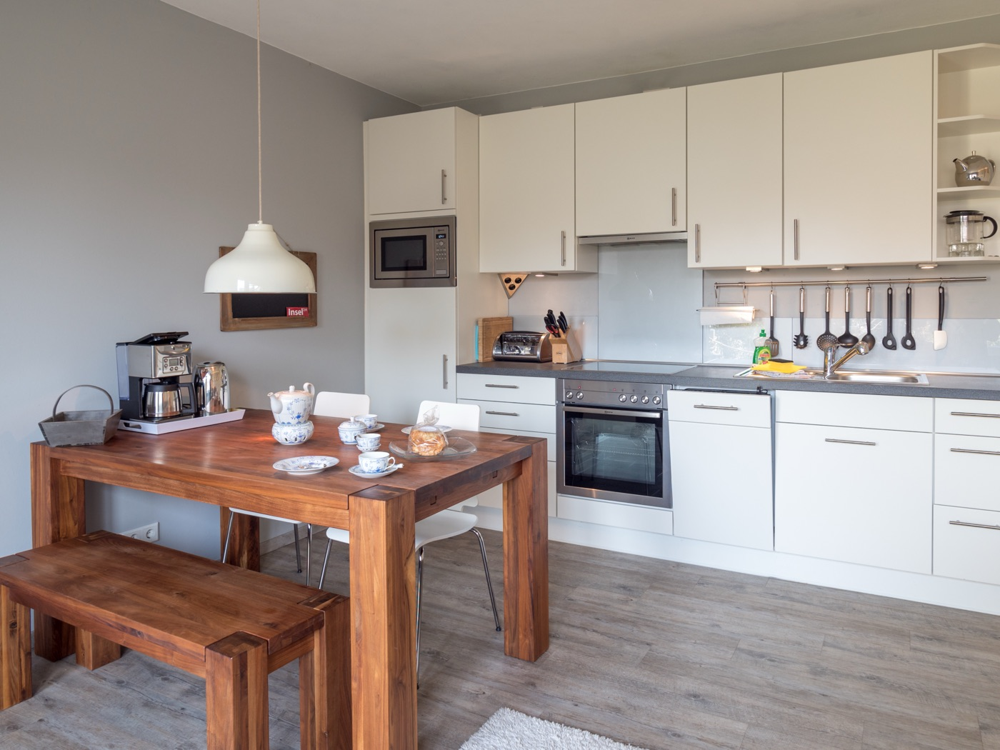
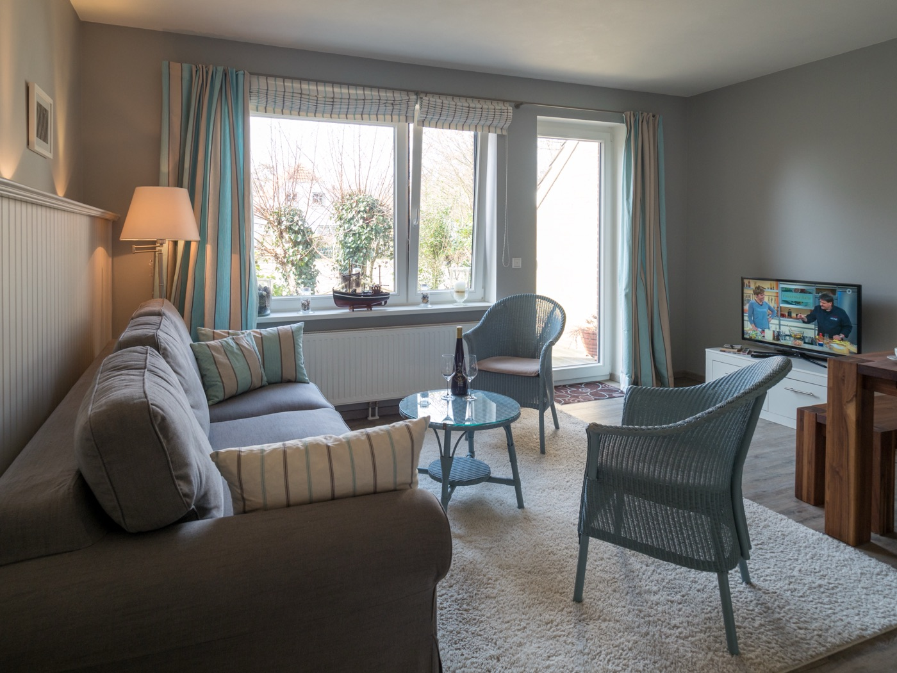
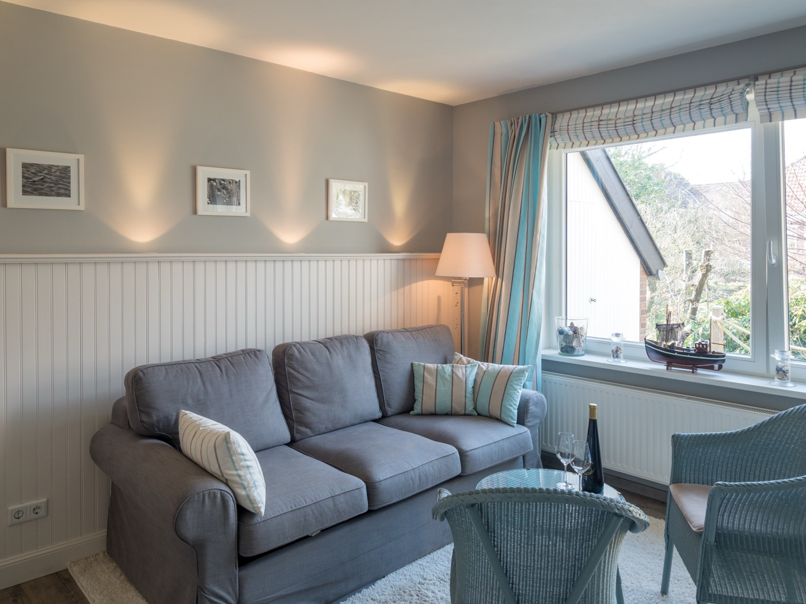
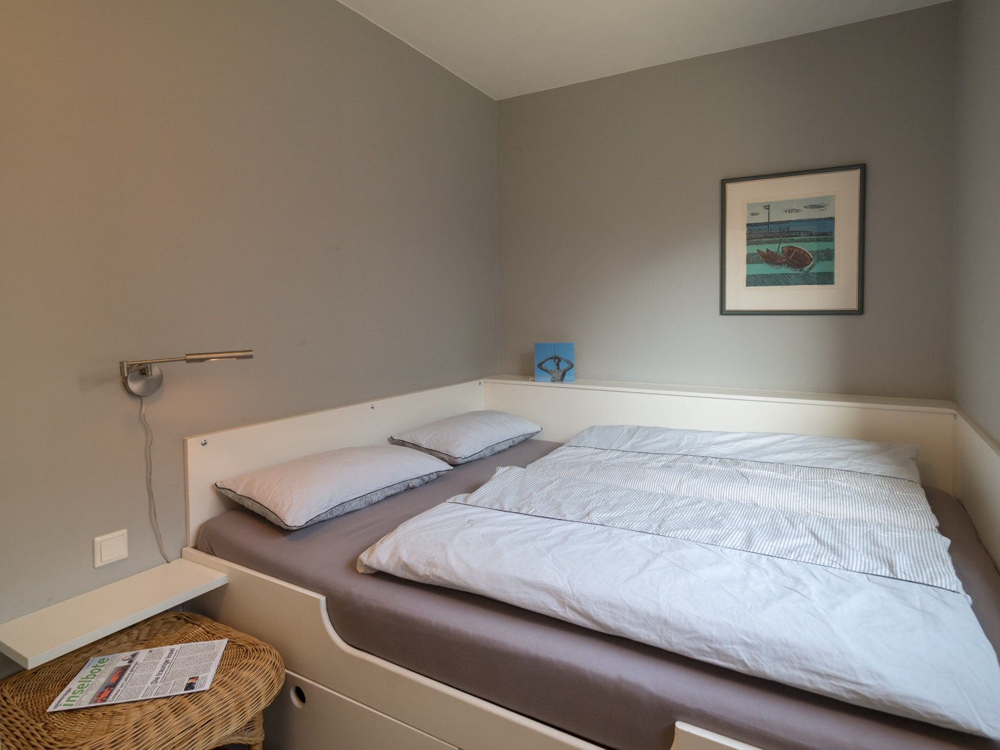
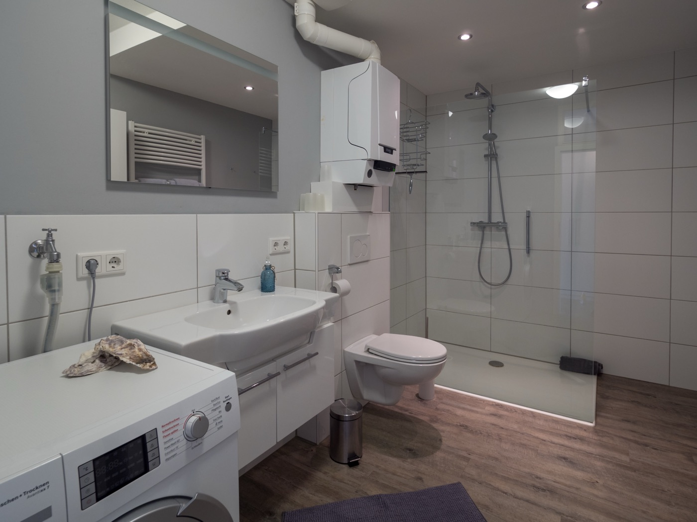
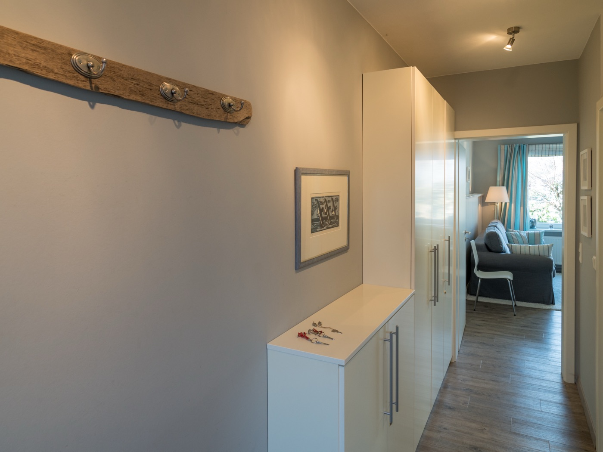

50 m² zum Ankommen und Wohlfühlen
Hell, gepflegt und vollausgestattet — Platz für bis zu 4 Personen im Noorderloog 28.

Wohnen wie zu Hause
Die Wohnung im Noorderloog empfängt Sie mit viel Licht und einem offenen, großzügigen Grundriss — ideal, um nach der Anreise gleich anzukommen und durchzuatmen.
Ob gemeinsames Kochen in der offenen Küche, ein ruhiger Nachmittag mit einer Tasse Tee oder der Feierabend auf der Terrasse: Hier finden Sie auf 50 m² den perfekten Rückzugsort für Ihre Auszeit auf Spiekeroog.
Alles inklusive, nichts vergessen
- Ferienwohnung (50 m²) für bis zu vier Personen
- Offene Küche mit vollständiger Ausstattung inkl. Geschirrspüler
- Geräumiges Bad mit Regendusche und Waschtrockner
- Schlafzimmer mit eingebautem Doppelbett und viel Stauraum für Koffer
- Zusätzliches Schlafsofa im Wohnzimmer für zwei weitere Personen
- Windgeschützte Südwest-Terrasse mit Gartenmöbeln
- Bettwäsche und Handtücher in ausreichender Zahl vorhanden
- Fußläufig zu Hafen, Strand und Einkaufsmöglichkeiten
Fotos der Wohnung






Die Wohnung virtuell erkunden
Schauen Sie sich in aller Ruhe um: Ziehen Sie mit der Maus oder dem Finger, um den Blick zu drehen.